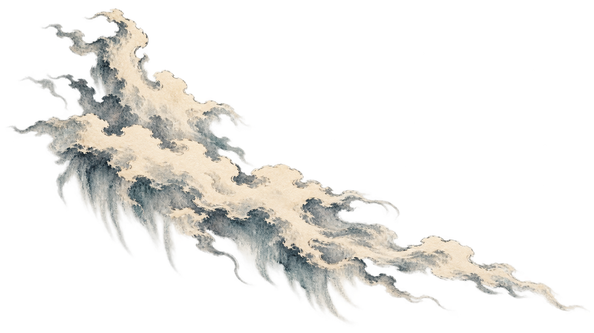
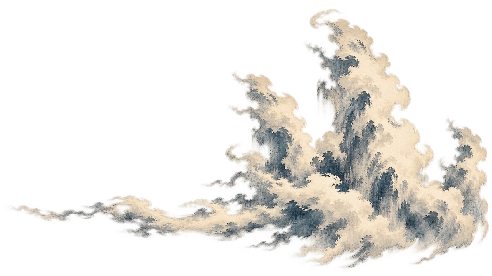
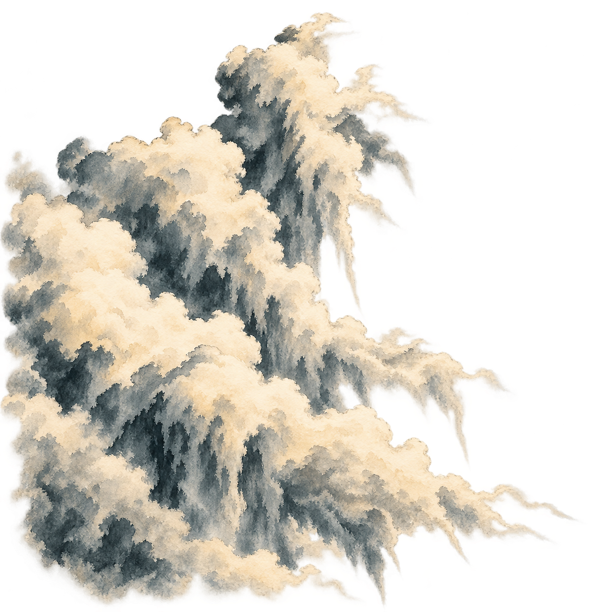
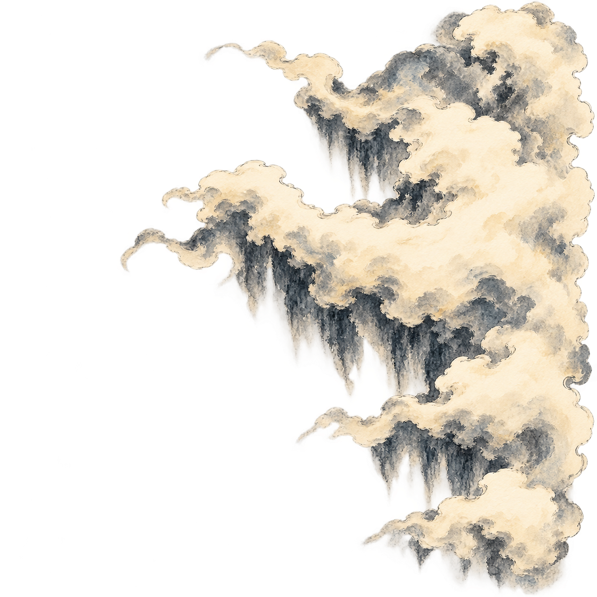
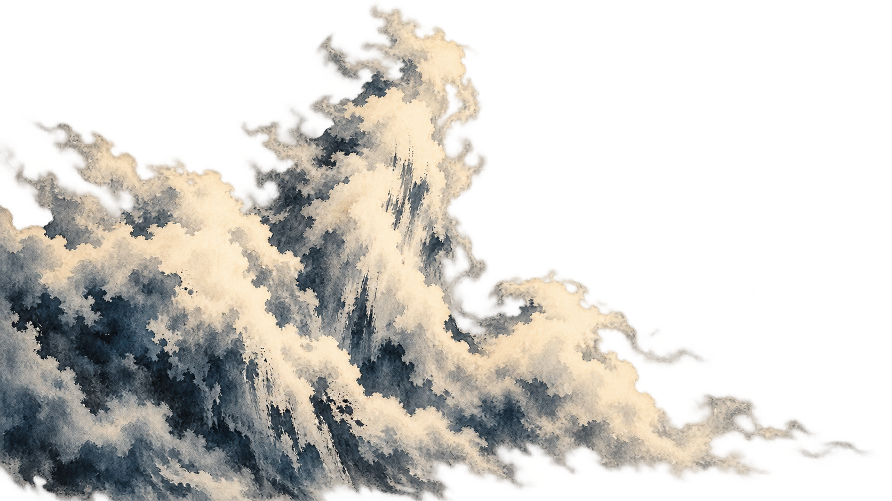
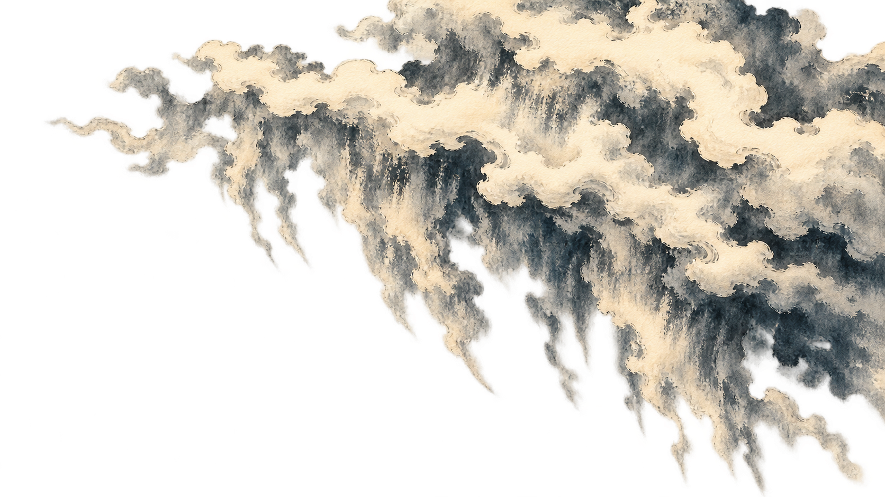

Autumn temples to overhead gorge · Tall torn cloud masses, hanging vapor fringes and cool slate-blue ink washes.






STATIC LAYERED STUDY · NEW PNG ARTWORK
Six independently generated transparent layers. The checkerboard below is only a viewing aid.
LEFT · REARA high torn crest and descending wispsLEFT · MIDDLETwo monumental leaning cloud columnsLEFT · FRONTA low heavy bank with a tall torn leading crestRIGHT · REARThree uneven upright feathery plumesRIGHT · MIDDLEThree staggered broad cloud pillars and hanging fringeRIGHT · FRONTAn upper storm overhang with a ripped descending curtain
ARTWORK PREVIEW · AWAITING YOUR APPROVALOpening artwork and page animation unchanged.